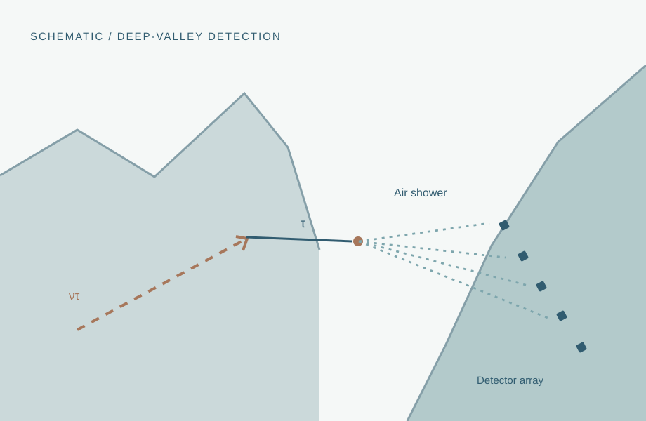

04 / Experimental particle physics
Particle detector research & TAMBO
Detector research in the context of TAMBO, a proposed mountain-based observatory for high-energy astrophysical tau neutrinos.

01 / Overview
Overview
This page introduces my particle-detector research connected with the Tau Air-shower Mountain-Based Observatory (TAMBO). The experiment is designed to search for high-energy tau neutrinos through extensive air showers produced after tau leptons emerge from rock near a deep mountain valley.
02 / Background
Scientific context
In the TAMBO concept, an Earth-skimming tau neutrino can interact inside the mountain, creating a tau lepton. A tau that emerges into the valley may decay in air; a detector array on the opposite valley wall can register the resulting particle shower. The technique uses the terrain as both a conversion volume and a means of background rejection.
Background reference: TAMBO experiment overview ↗
03 / Motivation
Research questions
- How does an extensive air shower produce a detectable signal across an array?
- Which detector characteristics are most important for timing, calibration, and event reconstruction?
- How do instrumentation and numerical modeling support neutrino detection?
04 / Approach
Methods & techniques
Detector physics
Describe the particle-detector principles and measurable signatures relevant to the TAMBO concept.
Experiment context
Explain tau-neutrino interactions, emerging tau leptons, and air-shower detection geometry.
Individual contributions
Add my specific hardware, electronics, testing, reconstruction, or simulation responsibilities once documented.
05 / Progress
Project notes
My exact responsibilities and results in this project will be added here. The present material explains the detector concept; it does not attribute particular TAMBO hardware developments or collaboration results to me.
06 / Supporting material
Figures & research outputs
Add a detector photograph, readout schematic, simulation, or measured performance figure from your actual TAMBO work.
Image or publication to be addedPublication links, posters, and code repositories will appear here once they are selected and approved for sharing.